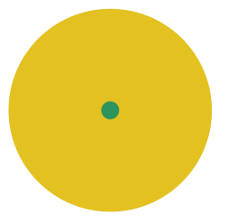
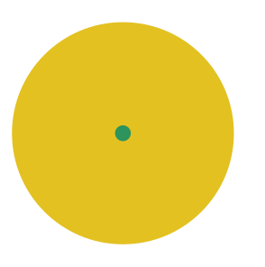
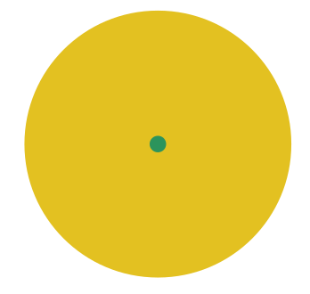

Diaspora
portugaise en europe
Classement de la population portugaise en Europe
- 1. Espagne
- 2. Allemagne
- 3. Angleterre
- 4. Suisse
- 5. Luxembourg
Pourcentage de Portugais en Espagne
7.95%
Pourcentage de Portugais en Angleterre
0.52%
Pourcentage de Portugais en Allemagne
0.39%
Pourcentage de Portugais au Luxembourg
31.5%
Diaspora
portugaise en Suisse
Portugais en Suisse
3.3% de la population suisse est portugaise
Diaspora
portugaise en Suisse Romande
Habitants Portugais par canton
- + Vaud : 59'538
- - Jura : 1'800
Sion: lol
La Chaux-de-Fonds: lol
Genève: lol
Lausanne: lol
Jura :
1'800
Neuchâtel :
13'964
Vaud :
59'539
Genève :
36'836
Fribourg :
24'329
Valais :
29'281
Diaspora
portugaise en Suisse Alémanique
Habitants Portugais par canton
- + Zürich : 27'730
- - Nidwald : 580
Zürich: 27'730
Nidwald: 580